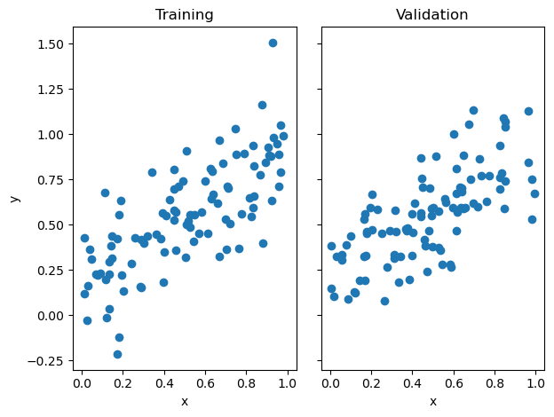
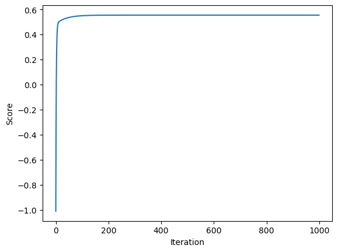
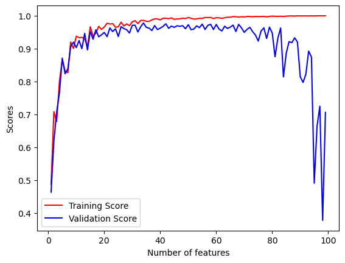
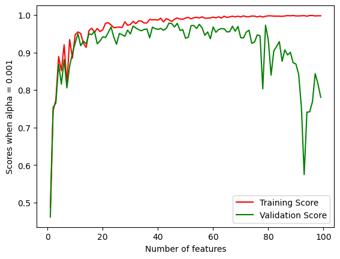
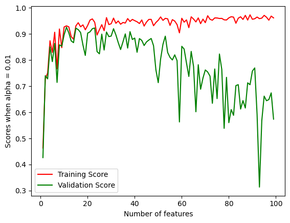
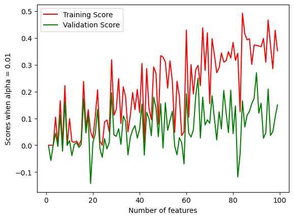

import linear
import importlib
importlib.reload(linear)
from linear import LinearRegressionHere is the link to my source code (source.py): https://github.com/cjy-2001/cjy-2001.github.io/blob/main/posts/linear-post/linear.py
Summary
In this blog post, I implemented least-squares linear regression in two ways: using the analytical formula for the optimal weight vector and using the gradient of the loss function to implement gradient descent. I also provided a demo to demonstrate both of those methods will produce the similar answer.
Then, I conducted experiments by increasing the number of features, discussing overfitting, and using LASSO regularization instead of linear regression. The post ends with a case study on the Capital Bikeshare dataset in Washington DC, showing how to preprocess the data and apply linear regression to predict the number of casual users.
Implementation
I have defined a single fit method with a method argument to determine which algorithm is used.
LR = LinearRegression()Demo
The following function will create both testing and validation data that I will use to test my implementation:
import numpy as np
from matplotlib import pyplot as plt
def pad(X):
return np.append(X, np.ones((X.shape[0], 1)), 1)
def LR_data(n_train = 100, n_val = 100, p_features = 1, noise = .1, w = None):
if w is None:
w = np.random.rand(p_features + 1) + .2
X_train = np.random.rand(n_train, p_features)
y_train = pad(X_train)@w + noise*np.random.randn(n_train)
X_val = np.random.rand(n_val, p_features)
y_val = pad(X_val)@w + noise*np.random.randn(n_val)
return X_train, y_train, X_val, y_valI will be using the following data:
n_train = 100
n_val = 100
p_features = 1
noise = 0.2
np.random.seed(40)
# create some data
X_train, y_train, X_val, y_val = LR_data(n_train, n_val, p_features, noise)
# plot it
fig, axarr = plt.subplots(1, 2, sharex = True, sharey = True)
axarr[0].scatter(X_train, y_train)
axarr[1].scatter(X_val, y_val)
labs = axarr[0].set(title = "Training", xlabel = "x", ylabel = "y")
labs = axarr[1].set(title = "Validation", xlabel = "x")
plt.tight_layout()
First, I want to test the analytical method.
LR.fit(X_train, y_train) # I used the analytical formula as my default fit method
print(f"Training score = {LR.score(X_train, y_train).round(4)}")
print(f"Validation score = {LR.score(X_val, y_val).round(4)}")Training score = 0.5545
Validation score = 0.4746The estimated weight vector w is:
LR.warray([0.74797812, 0.16855619])I can get the same value for w using gradient descent (it would be even closer if I allowed more iterations).
LR2 = LinearRegression()
LR2.fit(X_train, y_train, method = "gradient", alpha = 0.001, max_epochs = 1000)
LR2.warray([0.74797779, 0.16855637])I can also see how the score changed over time.
plt.plot(LR2.score_history)
labels = plt.gca().set(xlabel = "Iteration", ylabel = "Score")
Experiment
As I’ve demonstrated the behavior above, now I will perform an experiment in which I allow p_features, the number of features used, to increase, while holding n_train, the number of training points, constant. I will record both training and validation scores while increasing p_features all the way to n_train - 1.
train_score = []
val_score = []
np.random.seed(3)
for p_features in range(1, n_train):
X_train, y_train, X_val, y_val = LR_data(n_train, n_val, p_features, noise)
LR = LinearRegression()
LR.fit(X_train, y_train)
train_score.append(LR.score(X_train, y_train))
val_score.append(LR.score(X_val, y_val))
plt.plot(range(1, n_train), train_score, color = 'red', label = "Training Score")
plt.plot(range(1, n_train), val_score, color = 'blue', label = "Validation Score")
plt.xlabel("Number of features")
plt.ylabel("Scores")
legend = plt.legend() 
Discussion
As the graph illustrates, when n_train is significantly larger than or not close to p_features, the linear regression model performs well on both the training and validation data, because the scores remain very close to each other.
However, as n_train gets larger and close to p_features, the validation score drops sharply while the training score still increases steadily. It indicates that although the linear model seems to perform well on training data, it inherently suffers from the overfitting problem, because it can’t perform well on those unseen data.
LASSO Regularization
The LASSO algorithm uses a modified loss function with a regularization term. Now I’m going to replicate the same experiment I did with linear regression, increasing the number of features up to n_train - 1, using LASSO instead of linear regression. I will experiment with 3 values of the regularization strength alpha.
I will start with alpha being set to 0.001.
Alpha = 0.001
from sklearn.linear_model import Lasso
np.random.seed(3)
train_score = []
val_score = []
for p_features in range(1, n_train):
X_train, y_train, X_val, y_val = LR_data(n_train, n_val, p_features, noise)
L = Lasso(alpha = 0.001)
L.fit(X_train, y_train)
train_score.append(L.score(X_train, y_train))
val_score.append(L.score(X_val, y_val))
plt.plot(range(1, n_train), train_score, color = 'red',label = "Training Score")
plt.plot(range(1, n_train), val_score, color = 'green',label = "Validation Score")
plt.xlabel("Number of features")
plt.ylabel("Scores when alpha = 0.001")
legend = plt.legend() 
Alpha = 0.01
np.random.seed(3)
train_score = []
val_score = []
for p_features in range(1, n_train):
X_train, y_train, X_val, y_val = LR_data(n_train, n_val, p_features, noise)
L = Lasso(alpha = 0.01)
L.fit(X_train, y_train)
train_score.append(L.score(X_train, y_train))
val_score.append(L.score(X_val, y_val))
plt.plot(range(1, n_train), train_score, color = 'red',label = "Training Score")
plt.plot(range(1, n_train), val_score, color = 'green',label = "Validation Score")
plt.xlabel("Number of features")
plt.ylabel("Scores when alpha = 0.01")
legend = plt.legend() 
Alpha = 0.1
np.random.seed(3)
train_score = []
val_score = []
for p_features in range(1, n_train):
X_train, y_train, X_val, y_val = LR_data(n_train, n_val, p_features, noise)
L = Lasso(alpha = 0.1)
L.fit(X_train, y_train)
train_score.append(L.score(X_train, y_train))
val_score.append(L.score(X_val, y_val))
plt.plot(range(1, n_train), train_score, color = 'red',label = "Training Score")
plt.plot(range(1, n_train), val_score, color = 'green',label = "Validation Score")
plt.xlabel("Number of features")
plt.ylabel("Scores when alpha = 0.01")
legend = plt.legend() 
Observation
When employing LASSO regression instead of standard linear regression, I notice that the validation score remains more stable while the training score performs well, even when the number of features used is large. This stability becomes more pronounced as I increase the value of alpha, indicating that the regularization term plays a more significant role in preventing overfitting by penalizing large coefficients.